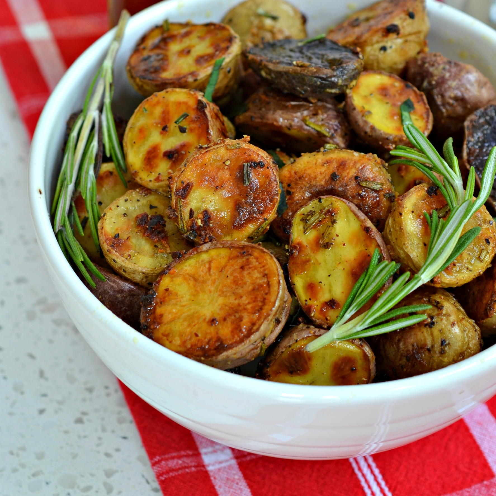

Classic Roasted Potatoes
Servings: 4 people
Prep Time: 10 minutes
Cook Time: 35 minutes
Crispy on the outside and fluffy on the inside, these classic roasted potatoes are the perfect side dish for any meal. Simple to prepare and incredibly satisfying, they will become a staple in your kitchen.
Did you know ? Roasted potatoes have been enjoyed for centuries and were a favorite dish of King Louis XVI of France. The king loved them so much that he popularized their consumption across Europe. So, when you enjoy roasted potatoes, you're indulging in a dish fit for royalty!